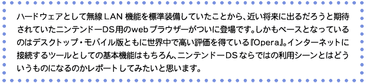
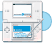
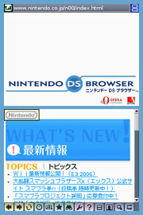
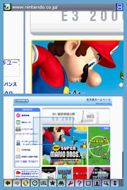
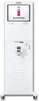

|
|  |
|  |
| webブラウザーということで、最初に電源を入れたときにはインターネットへ接続するための設定を行う必要があります。もっとも他のタイトルでニンテンドーWi-Fiコネクションを利用した経験があれば、本体にセーブされている設定をそのまま使えて簡単です。今回のレポートでもパソコン経由のニンテンドーWi-Fi USBコネクタと対応機種の無線LANアクセスポイントの両方で試してみましたが、以前の設定がそのままスムーズに使えました。すっかりニンテンドーWi-Fiコネクションに接続する機会が増えた編集長のニンテンドーＤＳです。操作方法はタッチペン中心なのですが、十字ボタンで選択項目の上下移動、Aボタンで決定、Bボタンで戻るという操作もできるので、自分のベストの組み合わせを見つけ出せば快適に操作できそう。 |
| まず感心したのが画面の表示方法です。基本の2画面モードでは下画面にホームページを縮小表示（こちらで全体像をつかめます）、上画面にその一部が拡大されて表示されます。この拡大部分は下画面をタッチペンで操作することで移動できます。そして他のページへジャンプしたいときは、ツールバーにある上下画面入替アイコンをタッチして拡大画面でリンク部分を探すわけです。ニンテンドーＤＳの画面解像度は横256×縦192ピクセルで、昨今普及している家庭用パソコンのディスプレイは大抵が横1280×縦1024ピクセル。パソコンで閲覧することを想定して作られたホームページを単に縮小したままで閲覧させるのでなく、一部分を拡大して絞り込むことで、画像や文字がパソコンと同じくらい見やすくなるわけですね。ここでポイントなのは拡大と縮小画面を上下に並べて見れること。慣れてくると画面の上下切り替えも自然にできますよ。これは携帯電話やPDAでは難しいと思います。まさにニンテンドーＤＳというハードウェアの特徴をいかしたアイデアですね。 |
| 次は実用面を見ていきましょう。ユーザーの方が気になっているのはwebブラウザーとしてインターネット上のサービスをどこまで使えるかという点だと思います。まず試してみたのはホームページ上でメールの送受信ができるwebメールとネットオークション。いずれも大手である『Yahoo!』のサービスを使ってみたのですが、まったく問題なし。ニンテンドーＤＳでメールの送受信ができるなんて少し感動です。オークションもウォッチリストの登録から入札→落札までパソコンと同じ感覚で行えます。続いて通称SNSと呼ばれるコミュニティサイトの中から『mixi』を試したのですが普通にログインできました。ページの表示も良好で各種書き込みなどもおおむねオッケー。SNSやブログのように長い文章を読むときはページ全体まで見る必要はないから、画面の表示方法を縦長モードに切り替えると便利ですよ。基本的には利用ブラウザーを限定していないサービスならパソコンと同じように使える模様です。こんなに小さいのにパソコン並みの情報量でホームページが見れて、同じサービスが使えるなんてすごい。ちなみに有害なホームページの閲覧をブロックする『i-フィルター』という全国の学校で導入実績のあるサービスも利用できるので、お子さんの利用も安心ですね。 |
| そして携帯型ゲーム機で使うwebブラウザーなのですから、屋外でどのくらい活躍できるか試す必要がありますよね。玩具店や家電量販店に設置されているおなじみのＤＳステーションや、ホテルやカフェなどで導入されているFREESPOTともに当然ですが設定不要でスムーズに通信が行えました。通信速度もLAN回線を使ったブロードバンドだからモバイルとしては納得できるスピードだし、携帯電話のようにパケット量を気にする必要もありません。どこでもいつでも通信できるというわけではないですが、自分の通勤・通学路の途中に上記のような無料アクセスポイントがあれば日に数回のメールやブログのチェックはランニングコストゼロで行えます。初期投資も『ニンテンドーＤＳブラウザー』だけですから、モバイル環境の構築としてはリーズナブルなモデルではないでしょうか。編集長は『Google』という検索エンジンを、知らないことをすぐに調べられる便利な辞書として活用しています。必要なときに電源を入れてすぐに使えるのがいいですよね。気軽にネットが楽しめますよ。 |
|